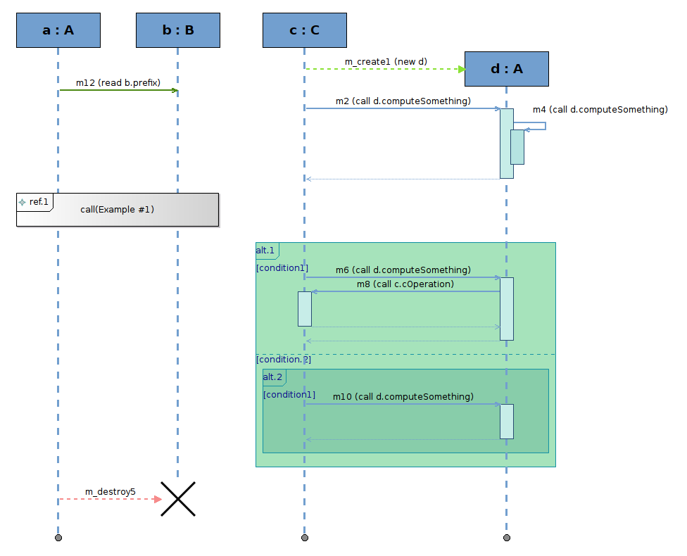
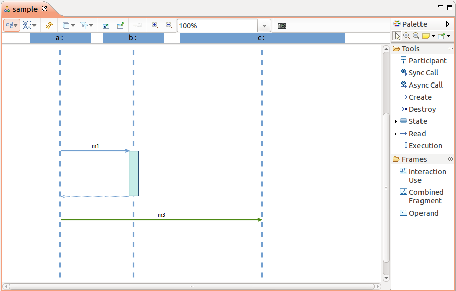
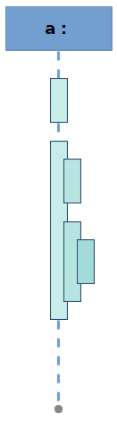
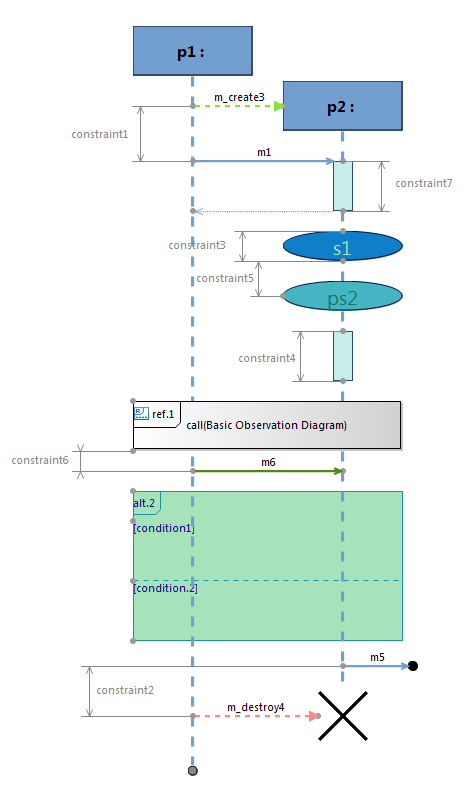

This document explains how to Sirius sequence diagrams editors/modelers. Sequence diagrams share most of the functionalities of normal diagrams, but they have some specificities and restrictions.
Sirius supports a special kind of diagrams which reuse the notations and conventions of UML Sequence Diagrams, but can be applied to other domains than just UML. Here is an example which illustrates most of the graphical constructions which can appear on these diagrams:
These diagrams behave mostly like normal Sirius diagrams, but in order to ensure the consistency of the models they represent, they have some restrictions. They also support some additional features or change the classical behavior of some features.
This document only describes the specificities of sequence diagrams. Unless otherwise stated here, all the features of normal Sirius diagrams apply also to sequence diagrams, so you can refer to the general diagrams user manual for more information.
IMPORTANT WARNING: To work correctly, Sirius sequence diagrams must have a tight control on where the graphical elements are placed on the diagram and on their synchronization with the underlying semantic model. This means that to use sequence diagrams you must:
As their name says, sequence diagrams are meant to represent ordered sequences of elements. Typically, they represent events sent and received between some entities over time. The canonical case is a UML Sequence Diagram (where the notation comes from), which represents the messages exchanged between objects in a software system.
The most important consequence of this is that contrary to what happens on a classical diagram, the relative graphical positions of elements on a sequence diagram have strong meaning. This is true for the vertical placement and for the left-to-right order of lifelines. However placing a message above or below another one has a strong implication on the ordering of the events they represent, and thus on the structure of the underlying semantic model which is represented. Sirius works hard to ensure that what you see on you sequence diagram (in terms of vertical ordering of elements and horizontal ordering of lifelines) always correspond to the semantic ordering of the represented events.
This works both ways:
Most of the specific features and restrictions of sequence diagrams compared to other diagrams derive from this strong guarantee that at all time, the graphical (vertical) order of the elements you see on the diagram match exactly the semantic order of the events which exist in the underlying model.
In order to guarantee the strong guarantee described above, some of the features present on normal diagrams are not supported, or even completely disabled on sequence diagrams. Basically, anything which would make it possible on a normal diagram to have meaningful semantic elements not visible on the diagram is forbidden. This would make it impossible for Sirius to keep consistent tracking of the «position» of these invisible elements relative to the ones which are visible.
The Arrange All command which launches an automatic layout of all the elements on a diagram has been completely customized for sequence diagrams. Arranging a sequence diagram will keep the relative positions of all the elements, but reduce any un-needed vertical or horizontal spaces. All elements will be resized to the minimum size necessary, and «packed» towards the top-left corner of the diagram. This results in a diagram which uses the minimum space required to present all the elements, while keeping enough white-space between them to be easy to read.
This section presents each type of elements specific to sequence diagrams which are supported by Sirius, and their specificities (if any). Note that not all sequence diagrams will support all kinds of elements; this depends on the diagram’s configuration.
Life-lines represent the entities which interact (by exchanging events) on a sequence diagrams. They can be many different things depending on the domain being modeled: software objects, machines, people, etc. They are represented by a node (often a rectangle) at the top, and a thin vertical line attached to the bottom side of the node (always horizontally centered on it). There may be another node (generally small) at the bottom of the lifeline, representing the end of the life-line.
The example below shows three life-lines, named
a,
b and
c. Then end of
a and
c is a small grey circle at the bottom of the life-lines, while the end of
b, which is explicitly destroyed by the
m_destroy2 message, is a black cross.
Life-lines can be moved horizontally, but their vertical placement can not be controlled directly. It is determined automatically by Sirius using the following rules:
a and
c are aligned at the top of the diagram.
b is aligned with the
m_create1 creation message. Moving that message vertically would also move the top of the
b life-line to stay aligned.
The vertical size of life-lines can be controlled, following some rules:
a or
c would resize both life-lines (but not
b).
b ends when it receives the
m_destroy2 message. Moving either the destruction message or the black cross which represents
b's destruction would resize the life-line (but only
b).
Empty life-lines have a default size large enough that you can add several elements to them without the need for resizing. In the example,
a and
c have the default size.
When you move life-lines horizontally, you can change their left-to-right order. If required, the system may move some other life-lines to ensure there is always some minimal horizontal blank space between two consecutive life-lines.
When a scenario diagram is higher than the displayed area, reading the last messages of the diagram makes the instance role of the life-lines not visible and does not help to locate the source and the target of a message. You can keep life-line header visible by activating «Display header» into
Preferences > Sirius > Sirius Diagram > Appearance. This preference is enabled by default.

The optimum height is automatically computed during the creation of a new sequence diagram. You can change the height manually by:
The height is stored in the diagram. The next time you open the diagram, the header will be the same size.
Executions usually represent a time interval during which one of the participants in the sequence is active. They are represented by vertical rectangles superposed to the corresponding life-line, or to another execution (recursively).
The example below show a single life-line with five executions on it: two are top-level executions directly on the life-line itself, while the rest are sub-executions of others.
Note that not all sequence diagram modelers will allow for the creation of «raw» executions like these, which are not connected to messages. This all depends on the semantics of the underlying models and of the diagram’s configuration.
Basic messages represent some form of communication between lifelines. They are represented by horizontal arrows between lifelines (or executions on lifelines).
The example below shows three lifelines and three messages. Note that the last one,
m3, is a
reflective message which is received by the same lifeline which sent it.
Note that not all sequence diagram modelers will allow for the creation of basic message like these, which are not connected the beginning or end of an execution. This all depends on the semantics of the underlying models and of the diagram’s configuration.
Most sequence diagrams (including UML) will support some sort of complex messages, which include both executions and basic messages combined in special ways. This is used for example to represent synchronous messages in UML, where the first message sent triggers the execution of some behavior on the target lifeline, behavior which produces a return value sent back to the origin when the execution terminates.
In the example below, the lifeline
a sends a message
m1 to
b, which triggers the execution of a complex behavior before
b can send the result value back to
a. During the execution of the behavior in
b, it sends another message to
c, waits for the answer, and then sends a message to itself which executes a sub-behavior (but does not return any useful value).
Two special kinds of messages are used to represent the creation of a lifeline or its destruction by another participant. Creation messages are represented as normal messages, except that the top of the lifeline they target is always vertically aligned with the message (representing the fact that this lifeline did not exist before the message created it). Similarly, destruction messages are normal messages except that the bottom of the lifeline they target is aligned with the message. It is customary that the End of Life marker at the bottom of the lifeline (used to resize it) uses a different visual style (often a black cross) to represent the fact that the lifeline is destroyed by the message and does not exist afterwards.
The figure below shows one example of each of these special kinds of messages: lifeline
a first sends message
m_create1 which creates lifeline
b, and then sends destruction message
m_destroy2 which provokes the destruction of
c.
Lost and found messages are messages with an end which does not cover any lifeline.
The figure below shows one example of lost and found message for each of the different kinds of messages: lifeline
e first receives found message
m_create7 which creates the lifeline, and then sends lost messages
m1 which should triggers the execution of a complex behavior, creation message
m_create2 which should create another lifeline, destruction message
m_destroy3 which could provoke its destruction,
m4 which could be linked to a lifeline not represented on the current diagram. Lifeline
e finally receive three found messages:
m9 which triggers the execution of a complex behavior,
m8 which is a simple message and
m_destroy8 which provokes the destruction of
e.
A lost/found message can be moved vertically like other messages. Align commands are available for lost and found message ends.
Interaction Uses are constructions which usually represent «shortcuts», indicating that some complex interaction, which may be defined in another sequence diagrams, occurs at some point without cluttering the current diagram. They are represented by rectangles centered on the lifeline(s) which are concerned. They can contain a label in the top-left corner, indicating what kind of shortcut they represent, and another label (not editable directly) centered in the rectangle. Interaction uses may cover several lifelines.
States are more general annotations which are typically used to indicate that some condition regarding the state of a participant is true at this point in the sequence. They are represented by simple nodes centered on the single lifeline they concern.
The figure below shows two interaction uses, one which covers only
a and the other covering both
a and
b. It also shows a simple state
s1 on
b, which is represented by a blue oval in this diagram.
Combined Fragments and Operands are the most complex constructions on sequence diagrams. They are used to regroup other constructions (including other Combined Fragments) into blocks. A combined fragment is represented in a way similar to interaction uses (a rectangle which can cover several lifelines), except that it can contain one or more operands, separated by a dotted horizontal line. Operands can contain almost all the other constructions supported by sequence diagrams, with the restriction that they must be self-contained: a message which starts inside an operand must end inside the operand (i.e. on a lifeline which is covered by the parent combined fragment), and an execution which starts in an operand must end in the same (it can not end in another operand below).
The figure below shows a top-level combined fragment named
alt, which represent
alternatives (the semantics is just an example, it is entirely dependent on the diagram’s configuration and underlying model). It contains three operands, labeled
x < 0,
x > 0 and
x == 0. Here, the content of each operand represent the alternative which would be executed if the corresponding condition was true. Note that the last operand,
x == 0, contains a sub-fragment, named
par, with two operands. Here the intended semantics is that for the
x == 0 case, we execute both
step1 and
step2 in
par-allel.

The elements displayed on a sequence diagram are delimited with some events which belong to the diagram semantic (chronological and global) ordering. An observation point is a node representing (gray dots on the following picture) those events, they are automatically placed and allow to create and display constraints between the events.
The figure below shows observation points as grayed dots on each sequence diagram element and several constraints with bracket style created between them.

The main segment of the constraint can be moved and rotated. The other segments cannot be moved, the constraint is attached to observation points which are placed by the automatic layout. So move commands are disabled on observation points, but resize commands activation depends on the resize kind defined in the Viewpoint Specification Model.